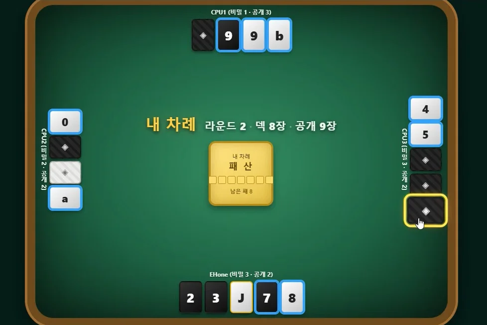
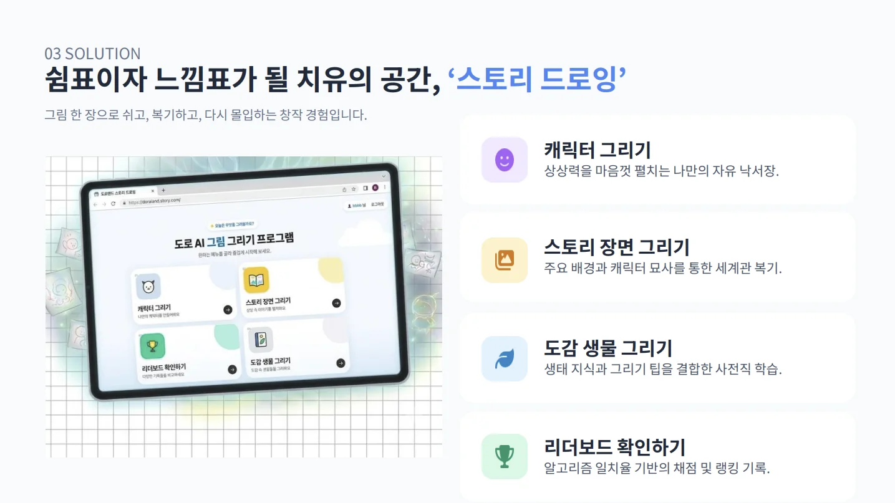
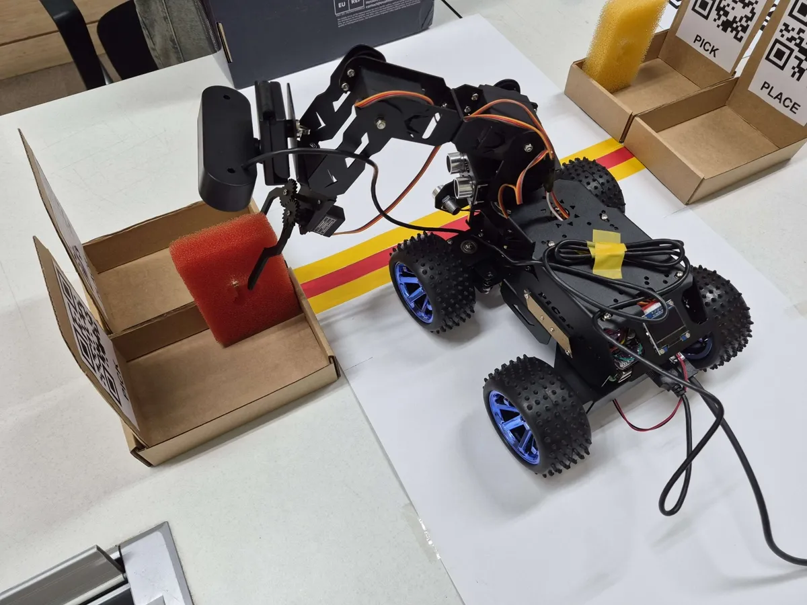
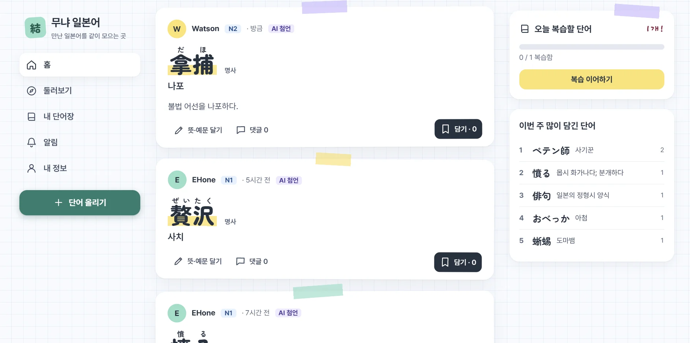

안녕하세요, 윤태원입니다.
중학교 2학년 때 C언어를 독학하며 개발자를 꿈꿨고, 지금은 한양대학교 ERICA 인공지능학과에서 AI를 공부하고 있습니다. AI를 활용한 콘텐츠를 기획하고 개발하며, 학부연구생으로 연구에도 참여하고 있습니다.
LLM과 머신러닝을 배우면서 C, Python, Java, 웹 같은 기초 개발 실력을 함께 다지고 있습니다. 소프트웨어 및 시스템을 개발하는 것에 흥미가 있습니다.
걸어온 길
- 2023 인공지능학과 입학 Python을 시작으로 알고리즘, 웹, 앱 개발에 집중했습니다.
- 2024–25 사회복무요원 복무 완료 사회복무요원으로 복무를 마쳤고, 이 기간에 일본어 공부와 개발을 꾸준히 병행했습니다.
- 2026 복학 · Database Lab 학부연구생으로 연구에 참여하며 SUZUHA와 개발 중입니다.
자격과 활동
- 1급한국사능력검정
- 2급컴퓨터활용능력
- 4급한자능력검정
- 준비 중HSK 5급
- 참여데이터 핸들링 공모전
- 참여Unity 부트캠프
사용 언어와 기술
- Python
- PyTorch
- REST API
- SQL
- PostgreSQL
- HTML · CSS · JS
- React
- TypeScript
- Java
- C
- C# · Unity
- Git
- Raspberry Pi
- 한국어
- English
- 日本語
관심 분야
Agentic AI
AI가 질문에 답하는 데서 그치지 않고, 스스로 계획을 세우고 도구를 쓰고 결과를 보며 다음 행동을 고치는 방식에 관심이 있습니다. 연구실에서는 에이전트가 데이터베이스와 문서를 근거로 정확하게 일하도록 만드는 방법을 공부하고 있습니다.
- LLM 에이전트
- Harness Engineering
- Multi-Agent
- RAG
- Tool Use
- 데이터베이스
鈴羽 SUZUHA직접 만든 AI 에이전트 비서
내 컴퓨터에 상주하면서, Discord로 보낸 메시지 한 줄로 원격 작업을 해 주는 AI 에이전트입니다. 밖에 있어도 Discord에서 지시하면 SUZUHA가 집 컴퓨터에서 직접 코드를 실행하고 결과를 알려 줍니다.
작업이 방대하면 SUZUHA가 일을 나누어 산하의 여러 에이전트에게 할당합니다. 에이전트마다 접근할 수 있는 폴더, 쓸 수 있는 도구와 권한을 지정해 맡은 범위를 벗어나지 않게 합니다.
모델 자체보다 에이전트가 작동하는 환경과 규칙을 설계하는 일, 즉 Harness Engineering이 SUZUHA 개발에서 가장 중점을 둔 부분입니다.
- Discord 메시지로 컴퓨터 원격 작업 지시와 결과 보고
- 하위 에이전트에 업무 분배, 에이전트별 작업 범위와 권한 설정
- 코딩 보조, 작업 공간 정리, 문서 작업과 분석 보조
- 학생 식당 메뉴, 도서관 좌석 같은 데이터 수집 자동화
프로젝트
- 2023첫 프로젝트
-
다빈치 코드 보드게임 소프트웨어화 및 AI 개발
MTS 게임즈의 의뢰로 진행한 프로젝트입니다. 대표님의 멘토링 아래 보드게임 다빈치 코드를 소프트웨어로 옮기고, 상대 타일을 추리하는 AI를 구현했습니다.
- 2024–25사회복무요원 복무 기간
-
사회복무요원 — 장애노인 생활시설 복무
사회복무 관련 교육을 이수한 뒤 장애노인 생활시설에서 일했습니다.
- 어르신들의 트레이닝 보조
- 간호사의 지시에 따른 외진 보조와 투약 보조
복지 시설이 어떻게 운영되고 현장에 어떤 어려움이 있는지 직접 볼 수 있었던 소중한 시간이었습니다.
-
N3에서 JLPT N1 합격까지, 1년
N3부터 시작해 1년 만에 N1을 145점(CEFR C1)으로 합격했습니다. 이 경험으로 여러 일본어 교육 프로젝트를 돕고, 콘텐츠 제안과 감수를 맡았습니다.
-
Yuki — AI 에이전트와 함께 쓰는 디스코드 음악 봇 개발
직접 모아 운영하는 30명 내외의 디스코드 서버에 부가 기능을 더하려고 만든 봇입니다. 누구나 명령어로 쓸 수 있습니다.
- 음악 재생, 대기열·볼륨 조정
- 역할 부여와 서버 관리
가장 큰 강점은 Discord에 연결할 수 있는 어떤 AI 에이전트든 붙여 봇을 대신 조작하게 할 수 있다는 점입니다.
- 2026복학 후
-
다빈치 코드 릴레이 형식 멀티플레이 게임 개발

웹 소켓을 공부하며 착안한 2023년 버전의 리메이크로, 2~4명이 차례로 이어 하는 릴레이 형식 멀티플레이 게임입니다.
- 서버 안의 심판이 게임을 진행하고, 플레이어는 판단을 보내 결과를 받는 구조
- 플레이어 간 채팅
특히 통신 프로토콜과, 상대 패를 맞힐 확률을 계산해 연속 행동 여부까지 판단하는 CPU AI 개발에 공을 들였습니다.
-
DOROBUS AI 그림 그리기 콘텐츠 기획 및 개발

㈜도로가 의뢰한 IC-PBL 과제로, 초·중등 학습 플랫폼 DOROBUS에서 아이들이 수업 밖에서도 즐길 수 있는 그림 그리기 콘텐츠를 기획했습니다. 서비스에 바로 적용할 수 있도록 DOROBUS의 웹 개발 스택에 맞춰 개발하고 있습니다.
-
커리큘럼 기반 강의개요서 초안 생성기 연구
데이터베이스 연구실에서 ㈜도로 관련 기능 개발을 맡으며 개인적으로 진행한 연구입니다. 요청 한 줄로 강의개요서 초안을 만듭니다.
- 커리큘럼 DB를 검색하고, 검색 점수를 바탕으로 개요서 내용을 JSON으로 생성
- 이 JSON으로 hwpx·docx 양식을 채움
- 근거가 부족한 부분은 에이전트와 대화하며 보완
-
PiCar 자율주행 & 픽앤플레이스 프로젝트

조립 및 프로그래밍 담당 · Team Achilles (with Kim Jaehoon)
QR을 읽고 정지선까지 자율주행한 뒤, 로봇 팔로 물체를 집어 반대편 상자로 옮기는 미션을 수행했습니다.
-
무냐 일본어 — 단어 커뮤니티 사이트 유지 보수 및 운영 중

LLM을 활용한 콘텐츠 개발의 일환으로 고안한 프로젝트로, 제가 가르치는 친구들과 함께 일본어를 공부하기 위해 운영하는 웹사이트입니다.
- 단어를 올리고 AI 첨언 버튼을 누르면 설명·뉘앙스·예문·함께 알아두면 좋은 단어를 생성
- 계정마다 하루 사용 토큰 제공
- 단어 카드와 첨언을 PC·모바일에서 PNG 이미지로 저장